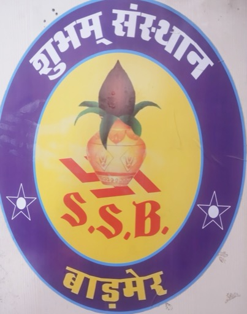

Shiksha — Education
Nothing else holds unless people know. Literacy, schooling for girls, and the plain information that lets a family claim what is already theirs.
About the Sansthan
A registered society working across Barmer district for health, rights, education and dignity.
Our story
Subham Sansthan is a non-governmental organisation based in Barmer, in the far west of Rajasthan. It has been registered under the Rajasthan Societies Registration Act, 1958 since the year 2000.
In the years since, it has become a familiar name across the Barmer region — the kind of organisation people know by sight, because its volunteers keep appearing at the village square, the school ground and the health camp.
Beyond its state registration, the Sansthan is registered with the Public Relations Bureau under the Government of India's Ministry of Information & Broadcasting, and with the National AIDS Control Organisation in New Delhi. It is also registered with the Directorate of Employment and the Labour Department of the Government of Rajasthan.
For more than seventeen years it has held HIV and AIDS awareness programmes without a break. It has been honoured at district level, more than once, for its contribution to social welfare. It worked on the national Aadhaar promotion campaign. And through the COVID-19 pandemic, it kept serving.
The Sansthan works as a registered society, in partnership with the Government of India's Ministry of Information & Broadcasting, the National AIDS Control Organisation, and the Government of Rajasthan.

What our name carries
Subham means that which is auspicious — that which brings good. Around the emblem run three words that the Sansthan has kept as its working order of priorities.
Nothing else holds unless people know. Literacy, schooling for girls, and the plain information that lets a family claim what is already theirs.
The habits a community lives by. Keeping what is generous in the culture of the Thar, and letting go of what has only ever caused harm.
Turning up. In the drought years, in the pandemic, in the villages that are furthest from the road — and doing it without waiting to be asked.
Vision & mission
We work to build a society of equal rights, in which economically weaker and excluded communities are empowered to shape their own lives.
Registrations & recognition
Subham Sansthan is not an informal group. It is a registered society, accountable to the bodies below.
Registered since 2000 under the Rajasthan Societies Registration Act, 1958, and accountable to the Registrar of Societies for the State.
Registered with the Public Relations Bureau, and empanelled with the Song & Drama Division for public-awareness campaigns carried out through folk media.
Registered for HIV and AIDS awareness work, which the Sansthan has run continuously in Barmer district for more than seventeen years.
Registered with the State Government's employment and labour machinery.
The Sansthan has been recognised several times at district level for its notable contribution to social welfare work in Barmer.
We are a small organisation with a long memory of this district. If you would like to volunteer, partner with us, support a programme, or just understand what is happening in Barmer — write to us or pick up the phone.